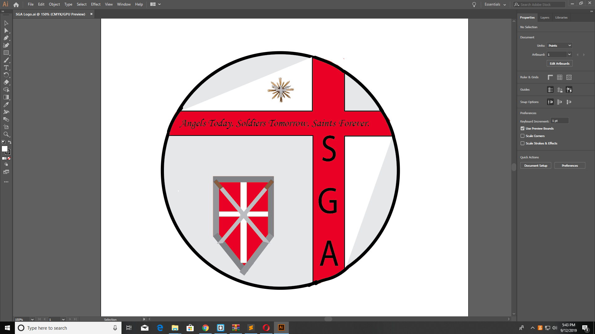
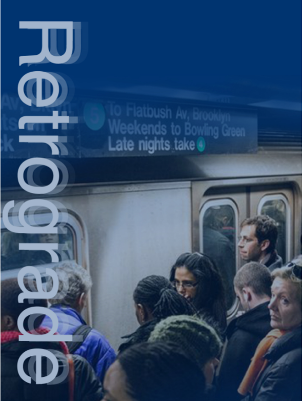
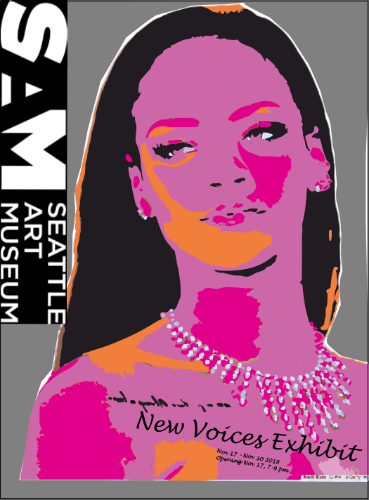

My favroite thing to do is be at the gym. Becoming a personal trainer is number #1 carrer goal. I love learning about new techniques and styles within the bodybuilding realm. My ultimate goal though would be to incorporate my designing skills with that carrer, and therefore be able to design my own brand and things like that.
| Project | Description |
|---|---|
|  | This is one my most recent projects that I have done. One of my friends had written a book but needed help with title covers and logos and such. He was looking to insert a logo on the bottom of every page. The logo was to be a symbol for a school that exsisted in the story. So, he have me a couple of sketches and ideas of what he wanted it to look like, so I came up with this and he was very pleased. This is the first time that I had done work for an actual client. |
|  | In one of my MMP classes last semester, we had to choose 1 thing that we hated about the MTA. Once we had chosen, we were then asked to create a project proposal to pitch. It could in the form of a video or animation, poster, speech. etc. The issue that I chose was train traffic and train scheduels being way off. So, I made a poster depicting my issue. We also had to follow our prposals with a plan on how we would like or want to go about fixing the issue. This one that I did is one of my favroites. |
|  | This poster that was one of the first ones that I ever did and is probably my favorite out of all the projects I have done. Thr assignment was to choose a famous artist or celebrity and create a self-portrait. The self-protrait was to be included in a museums new art exhibit. So for my self-portrait I chose Rihanna, and I really used my imagination with this one. |